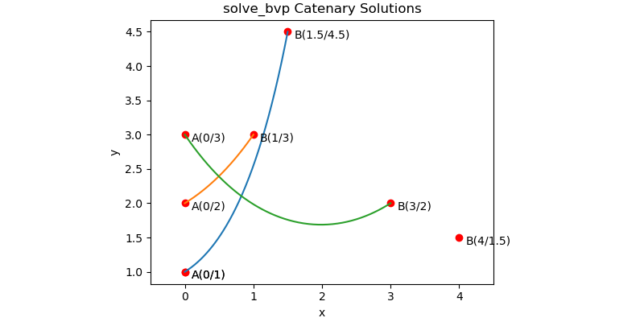
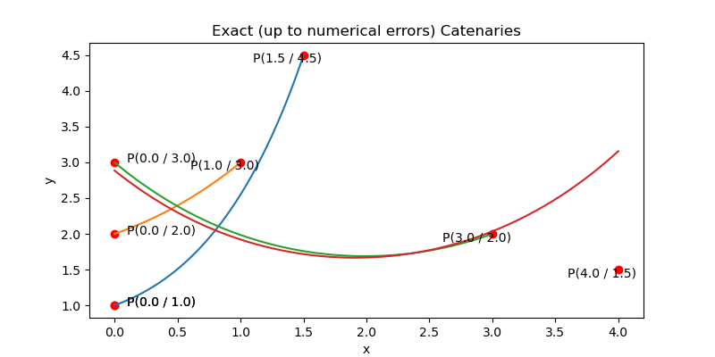
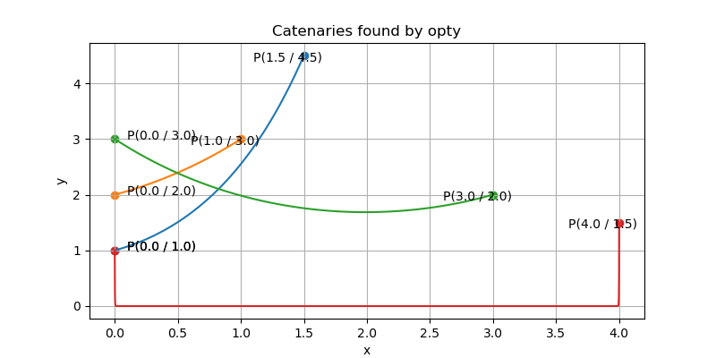
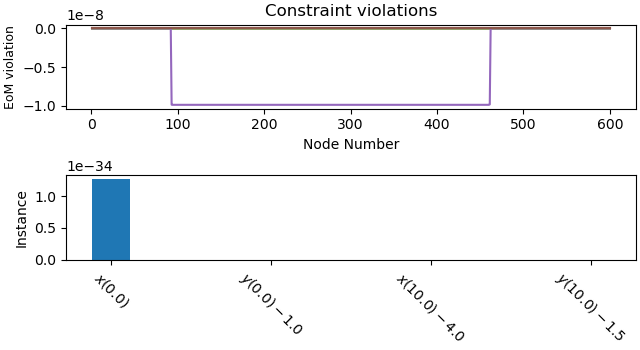
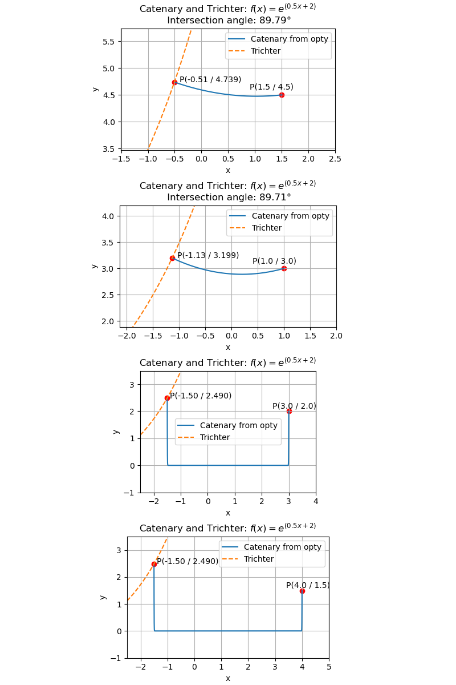

Note
Go to the end to download the full example code.
Minimal Surface¶
Description¶
Two cocentric parallel rings of radii \(a_2\) and \(b_2\) have their centers at \(x = a_1\) and \(x = b_1\). The goal is to find the minimal surface connecting these two rings. More explanations may be found here: https://mathworld.wolfram.com/MinimalSurfaceofRevolution.html where the relevant formulas and explanations can be found.
Notes¶
This simulation was inspired by Excercise 1.10 from the lecture “Dynamik mechanischer Systeme” given by the INM at the University of Stuttgart in 2026/2027.
The minimal differentiable surface connecting the two rings is a surface of revolution generated by a catenary curve. There may be non-differentiable minimal surfaces as well, they are called Goldschmidt solutions.
The problem is solved two ways:
Solving the Euler-Lagrange equation using scipy’s solve_bvp
Using opty to minimize the surface area directly.
Both solutions are compared to the ‘exact’ catenary solution when it exists.
The solutions obtained from the Euler-Lagrange equation (solve_bvp) seem more accurate than those obtained from direct optimization (opty). However, solve_bvp can only find differentiable solutions, while opty will also find non-differentiable Goldschmidt solutions.
The case \(a_2 = b_2\) requires special care and is not considered here.
At the end of the simulation, the left ring is replaced by a funnel (funnel = Trichter in German). This corresponds to Excercise 1.10.f and is only solved with opty.
import sympy as sm
import numpy as np
import sympy.physics.mechanics as me
import matplotlib.pyplot as plt
import copy
from opty import Problem
from scipy.optimize import root, minimize
from scipy.interpolate import CubicSpline
from sympy.calculus.euler import euler_equations
from scipy.integrate import solve_bvp
Solve the Euler Equations for the Minimal Surface Problem¶
num_nodes = 601
Define the points for which the minimal surface problem will be solved.
point_list = [(0.0, 1.0, 1.5, 4.5), (0.0, 2.0, 1.0, 3.0),
(0.0, 3.0, 3.0, 2.0), (0.0, 1.0, 4.0, 1.5)]
Loop over the points and check for the cases where y-coordinates are nearly equal.
for point in point_list:
a1, a2, b1, b2 = point
if np.isclose(a2, b2, rtol=1e-3):
raise ValueError("Points have nearly equal y-coordinates: "
f"A{a1, a2}, B{b1, b2} "
"simulation cannot handle this case.")
Euler equations with sympy
t = me.dynamicsymbols._t
x, y = me.dynamicsymbols('x y')
xd, yd = x.diff(t), y.diff(t)
xdd, ydd = x.diff(t, 2), y.diff(t, 2)
Lagrangian for the minimal surface problem.
L = 2 * np.pi * y * sm.sqrt(xd**2 + yd**2)
Find the Euler equations using the sympy function euler_equations.
EL = euler_equations(L, [x, y], t)
The two equations so obtained are not independent: The solution obviously does not depend on the parametrisation \(t\) in x(t) and y(t).
Fix a parametrisation by setting the speed to an arbitrary constant: \(x'^2 + y'^2 = \text{const} \leftrightarrow x' x'' + y' y'' = 0\) (\(' = \frac{d}{dt}\))
constraint = xd * xdd + yd * ydd
solve handles overdetermined systems as long as there is a solution that satisfies all equations.
sol = sm.solve([EL[0].lhs, EL[1].lhs, constraint], [xdd, ydd])
Compilation.
X, Y, XP, YP = sm.symbols('X Y XP YP')
subs = {xd: XP, yd: YP, x: X, y: Y}
xdd_expr = sol[xdd].subs(subs)
ydd_expr = sol[ydd].subs(subs)
f_xdd = sm.lambdify((X, Y, XP, YP), xdd_expr, cse=True)
f_ydd = sm.lambdify((X, Y, XP, YP), ydd_expr, cse=True)
Solve the bvp for the points given.
solution_list = []
def solve_catenary(a1, a2, b1, b2, num_nodes=201):
# Parametric catenary from A(a1/a2) to B(b1/b2), a2, b2 > 0.
# Returns (t, x, y, J) or None if no catenary is found /
# it is not the minimum.
def rhs(t, s): # s = [x, y, x', y']
X, Y, XP, YP = s
return np.vstack([XP,
YP,
f_xdd(X, Y, XP, YP),
f_ydd(X, Y, XP, YP),
])
def bc(sa, sb):
return np.array([sa[0] - a1, sa[1] - a2, sb[0] - b1, sb[1] - b2])
# initial guess: straight line
tt = np.linspace(0, 1, num_nodes)
s0 = np.zeros((4, tt.size))
s0[0] = a1 + (b1 - a1) * tt
s0[1] = a2 + (b2 - a2) * tt
s0[2] = np.gradient(s0[0], tt)
s0[3] = np.gradient(s0[1], tt)
res = solve_bvp(rhs, bc, tt, s0, tol=1e-6, max_nodes=100000)
# if y < 0, the solution does not make physical sense for the
# minimum surface problem.
if not res.success or np.any(res.sol(tt)[1] <= 0):
print(f"No catenary found for points: A{a1, a2}, B{b1, b2}",
res.message)
solution_list.append((None, None))
plot(a1, a2, b1, b2, None, None)
return None
xs, ys, xps, yps = res.sol(tt)
solution_list.append((xs, ys))
speed = np.sqrt(xps**2 + yps**2)
# Get the surface area. (not used)
# ∫ f dt ≈ Σᵢ (tᵢ₊₁ − tᵢ) · (fᵢ + fᵢ₊₁) / 2
J = np.trapezoid(ys * speed, tt) * 2 * np.pi
print(res.message)
plot(a1, a2, b1, b2, xs, ys)
return tt, xs, ys, J
fig, ax = plt.subplots(figsize=(8, 4), layout='constrained')
x_min = min(a1 for a1, a2, b1, b2 in point_list)
x_max = max(b1 for a1, a2, b1, b2 in point_list)
ax.set_xlim(x_min - 0.5, x_max + 0.5)
ax.set_title('solve_bvp Catenary Solutions')
ax.set_xlabel('x')
ax.set_ylabel('y')
ax.set_aspect('equal')
def plot(a1, a2, b1, b2, xs, ys):
if xs is not None:
ax.plot(xs, ys)
for (name, px, py) in [('A', a1, a2), ('B', b1, b2)]:
ax.scatter(px, py, color='red')
ax.annotate(f'{name}({px:g}/{py:g})', (px, py),
textcoords='offset points', xytext=(6, -6),
fontsize=10, color='black')
for points in point_list:
solve_catenary(*points)

The algorithm converged to the desired accuracy.
The algorithm converged to the desired accuracy.
The algorithm converged to the desired accuracy.
No catenary found for points: A(0.0, 1.0), B(4.0, 1.5) The maximum number of mesh nodes is exceeded.
Safe the solutions for comparison to the exact solution.
sol_var_np = copy.deepcopy(solution_list)
Exact Solution¶
def catenary(x, args):
a, c = args
return c * np.cosh((x + a) / c)
def solve_catenary(a1, a2, b1, b2):
# Try to get good initial guesses for a and c
def anfangswerte(x0):
a, c = x0
return ((c * np.cosh((a1 + a) / c) - a2)**2 +
(c * np.cosh((b1 + a) / c) - b2)**2)
x_guess = minimize(anfangswerte, [10.0, 10.0])
def catenary_equations(args):
a, c = args
eq1 = c * np.cosh((a1 + a) / c) - a2
eq2 = c * np.cosh((b1 + a) / c) - b2
return [eq1, eq2]
# Solve for the parameters a and c
# if a2 and b2 are nearly equal, root will not find a solution. This
# special case was solved in the lecture, here excluded.
initial_guess = x_guess.x
solution = root(catenary_equations, initial_guess)
a, c = solution.x
# Evaluate the catenary at some x values
x_values = np.linspace(a1, b1, num_nodes)
y_values = catenary(x_values, (a, c))
# 'solutions' may be found, that do not satisfy the boundary conditions.
# Check if the boundary conditions are satisfied within a tolerance.
if (np.isclose(y_values[0], a2, atol=1e-6) is False or
np.isclose(y_values[-1], b2, atol=1e-6) is False):
return [None, a, c]
return (x_values, y_values, a, c)
ac_list = []
values_list = []
Plot the catenary for each set of points.
fig, ax = plt.subplots(figsize=(8, 4))
ax.set_xlabel('x')
ax.set_ylabel('y')
ax.set_title('Exact (up to numerical errors) Catenaries')
for points in point_list:
a1, a2, b1, b2 = points
result = solve_catenary(a1, a2, b1, b2)
if result[0] is not None:
x_values, y_values, a, c = result
ax.plot(x_values, y_values)
ac_list.append((a, c))
values_list.append((x_values, y_values))
ax.scatter([a1, b1], [a2, b2], color='red')
ax.text(a1+0.1, a2, f'P({a1} / {a2})', fontsize=10, color='black')
ax.text(b1-0.4, b2-0.1, f'P({b1} / {b2})', fontsize=10, color='black')
else:
a, c = result[1], result[2]
ac_list.append((a, c))
values_list.append((None, None))
a1, a2, b1, b2 = points
print(f"Could not solve catenary for points: A({a1} / {a2}), "
f"B({b1} / {b2})")

Compare the variational solutions with the exact solutions.
for i in range(len(point_list)):
xs_var, ys_var = sol_var_np[i]
xs_exact, ys_exact = values_list[i]
if xs_var is None or ys_var is None:
pass
else:
var_sol = CubicSpline(xs_var, ys_var)
exact_sol = CubicSpline(xs_exact, ys_exact)
# Compare the solutions at the same x values.
tt = np.linspace(xs_var[0], xs_var[-1], num_nodes)
ys_var_eval = var_sol(tt)
ys_exact_eval = exact_sol(tt)
# Compute the difference
diff = np.abs(ys_var_eval - ys_exact_eval)
print(f"Point set {i}: max difference in the solutions = "
f"{np.max(diff):.3e}")
Point set 0: max difference in the solutions = 3.870e-09
Point set 1: max difference in the solutions = 8.625e-12
Point set 2: max difference in the solutions = 4.525e-09
opty¶
t = me.dynamicsymbols._t
x, y, ux, uy = me.dynamicsymbols('x y ux uy')
v = sm.symbols('v')
The simple equations of motion.
Sometimes technically unnecessary constraints on the variables help the convergence. One has to ‘play around’ a bit.
eoms = sm.Matrix(
[ux - x.diff(t),
uy - y.diff(t),
# arbitrary but constant speed helps convergence
ux**2 + uy**2 - v**2,
x, # restrict a1 <= x <= b1
y, # need y>= 0 to make physical sense.
ux] # Restrict ux to be non-negative.
)
State variables.
state_symbols = [x, y, ux, uy]
Time interval for the problem, completely arbitrary but fixed.
t0, tf = 0.0, 10.0
interval_value = (tf - t0) / (num_nodes - 1)
Minimize the surface area \(\int_{t_0}^{t_f} 2 \pi y(t) \sqrt{\dot{x}^2 + \dot{y}^2} \, dt\) with boundary conditions \((x(t_0) = a_1, y(t_0) = a_2, x(t_f) = b_1, y(t_f) = b_2)\).
def obj(free):
y = free[num_nodes:2*num_nodes]
ux = free[2*num_nodes:3*num_nodes]
uy = free[3*num_nodes:4*num_nodes]
return 2*np.pi * np.sum(y * np.sqrt(ux**2 + uy**2)) * interval_value
def obj_grad(free):
y = free[num_nodes:2*num_nodes]
ux = free[2*num_nodes:3*num_nodes]
uy = free[3*num_nodes:4*num_nodes]
s = np.sqrt(ux**2 + uy**2) + 1e-12
grad = np.zeros_like(free)
grad[num_nodes:2*num_nodes] = 2*np.pi * s * interval_value
grad[2*num_nodes:3*num_nodes] = 2*np.pi * y * ux / s * interval_value
grad[3*num_nodes:4*num_nodes] = 2*np.pi * y * uy / s * interval_value
return grad
Solve the optimization problem for each set of points.
fig, ax = plt.subplots(figsize=(8, 4))
ax.set_xlabel('x')
ax.set_ylabel('y')
ax.grid(True)
ax.set_title('Catenaries found by opty')
solution_list = []
for i, points in enumerate(point_list):
a1, a2, b1, b2 = points
instance_constraints = [
x.func(t0) - a1,
y.func(t0) - a2,
x.func(tf) - b1,
y.func(tf) - b2,
]
# opty will find the value of v to finish by tf.
bounds = {v: (0.0, np.inf)}
eom_bounds = {
3: (a1, b1),
4: (0.0, max(a2, b2)),
5: (0.0, np.inf)
}
prob = Problem(
obj,
obj_grad,
eoms,
state_symbols,
num_nodes,
interval_value,
instance_constraints=instance_constraints,
bounds=bounds,
eom_bounds=eom_bounds,
time_symbol=t,
backend='numpy'
)
x_guess = np.linspace(a1, b1, num_nodes)
y_guess = np.linspace(a2, b2, num_nodes)
ux_guess = np.zeros(num_nodes)
uy_guess = np.zeros(num_nodes)
y_guess = np.zeros(num_nodes)
y_guess[0] = a2
y_guess[1] = a2
y_guess[-1] = b2
initial_guess = np.concatenate([x_guess, y_guess, ux_guess, uy_guess,
[0.5]])
solution, info = prob.solve(initial_guess)
print(info['status_msg'])
solution_list.append(solution)
a, c = ac_list[i]
sol_vals, *_ = prob.parse_free(solution)
x_values, y_values = values_list[i]
ax.plot(sol_vals[0, :], sol_vals[1, :])
ax.scatter([a1, b1], [a2, b2])
ax.text(a1+0.1, a2, f'P({a1} / {a2})', fontsize=10, color='black')
ax.text(b1-0.4, b2-0.1, f'P({b1} / {b2})', fontsize=10, color='black')

b'Algorithm terminated successfully at a locally optimal point, satisfying the convergence tolerances (can be specified by options).'
b'Algorithm terminated successfully at a locally optimal point, satisfying the convergence tolerances (can be specified by options).'
b'Algorithm terminated successfully at a locally optimal point, satisfying the convergence tolerances (can be specified by options).'
b'Algorithm terminated successfully at a locally optimal point, satisfying the convergence tolerances (can be specified by options).'
Plot the constraint violations of the last solution only.
_ = prob.plot_constraint_violations(solution_list[-1])

Compare the solutions of opty with the exact solutions.
for i in range(len(point_list)):
opty_sol, *_ = prob.parse_free(solution_list[i])
x_opty, y_opty = opty_sol[0, :], opty_sol[1, :]
xs_exact, ys_exact = values_list[i]
if xs_exact is None or ys_exact is None:
continue
else:
opty_sol1 = CubicSpline(x_opty, y_opty)
exact_sol = CubicSpline(xs_exact, ys_exact)
# Compare the solutions at a the same x values.
tt = np.linspace(x_opty[0], x_opty[-1], num_nodes)
ys_opty_eval = opty_sol1(tt)
ys_exact_eval = exact_sol(tt)
# Compute the difference
diff = np.abs(ys_opty_eval - ys_exact_eval)
print(f"Point set {i}: max difference in the solutions = "
f"{np.max(diff):.3e}")
Point set 0: max difference in the solutions = 1.474e-03
Point set 1: max difference in the solutions = 3.728e-05
Point set 2: max difference in the solutions = 7.118e-04
Point set 3: max difference in the solutions = 3.138e+00
This is the opty solution where the left ring is replaced by a funnel-shaped constraint. I just picked an function for the funnel to make it look o.k..
t = me.dynamicsymbols._t
x, y, ux, uy = me.dynamicsymbols('x y ux uy')
helper = me.dynamicsymbols('helper')
v = sm.symbols('v')
def trichter(x):
# trichter is German for funnel
return sm.exp(x/2 + 2) - 1
def trichterdt(x):
return sm.diff(trichter(x), x)
eoms = sm.Matrix(
[ux - x.diff(t),
uy - y.diff(t),
# constant arbitrary speed
ux**2 + uy**2 - v**2,
# force y(t0) = trichter(x(t0)), by forcing helper = 0 at t = t0.
y - trichter(x) + helper,
y, # need y>= 0 to make physical sense
ux, # forcing ux >= 0 seems to help convergence
]
)
Set up the optimization problem for the funnel-shaped constraint.
state_symbols = [x, y, ux, uy]
num_nodes = num_nodes
t0, tf = 0.0, 10.0
interval_value = (tf - t0) / (num_nodes - 1)
Minimize the surface area.
def obj(free):
y = free[num_nodes:2*num_nodes]
ux = free[2*num_nodes:3*num_nodes]
uy = free[3*num_nodes:4*num_nodes]
return 2*np.pi * np.sum(y * np.sqrt(ux**2 + uy**2)) * interval_value
def obj_grad(free):
y = free[num_nodes:2*num_nodes]
ux = free[2*num_nodes:3*num_nodes]
uy = free[3*num_nodes:4*num_nodes]
s = np.sqrt(ux**2 + uy**2) + 1e-12 # avoid division by zero
grad = np.zeros_like(free)
grad[num_nodes:2*num_nodes] = 2*np.pi * s * interval_value
grad[2*num_nodes:3*num_nodes] = 2*np.pi * y * ux / s * interval_value
grad[3*num_nodes:4*num_nodes] = 2*np.pi * y * uy / s * interval_value
return grad
trichter_lam = sm.lambdify(x, trichter(x))
trichterdt_lam = sm.lambdify(x, trichterdt(x))
theta_list = []
Solve the optimization problem for each set of points in point_list.
fig, ax = plt.subplots(4, 1, figsize=(8, 12), layout='constrained')
for i, points in enumerate(point_list):
*_, b1, b2 = points
instance_constraints = [
x.func(tf) - b1,
y.func(tf) - b2,
]
top = np.full(num_nodes, np.inf)
bottom = np.full(num_nodes, -np.inf)
# The caternary must start on the funnel. Forcing it to be there for the
# first two nodes ensures that the catenary starts on the funnel.
# Fixing only at t = t0 does not work, I believe because the integration
# method.
top[0:2] = 0
bottom[0:2] = 0
left_start = -1.5
bounds = {v: (0.0, np.inf),
# Unless x is limited to the left, with this funnel and with
# the points given, opty will always use the Goldschmidt
# solution.
x: (left_start, b1),
helper: (bottom, top)}
eom_bounds = {
4: (0.0, np.inf),
5: (0.0, np.inf)
}
prob = Problem(
obj,
obj_grad,
eoms,
state_symbols,
num_nodes,
interval_value,
instance_constraints=instance_constraints,
bounds=bounds,
eom_bounds=eom_bounds,
time_symbol=t,
)
x_guess = np.linspace(left_start, b1, num_nodes)
y_guess = np.linspace(3, b2, num_nodes)
helper_guess = np.zeros(num_nodes)
ux_guess = np.zeros(num_nodes)
uy_guess = np.zeros(num_nodes)
initial_guess = np.concatenate([x_guess, y_guess, ux_guess, uy_guess,
helper_guess, [0.1]])
solution, info = prob.solve(initial_guess)
print(info['status_msg'])
sol_vals, *_ = prob.parse_free(solution)
xmin = np.min(sol_vals[0, :]) - 1
xmax = np.max(sol_vals[0, :]) + 1
ymin = np.min(sol_vals[1, :]) - 1
ymax = np.max(sol_vals[1, :]) + 1
ax[i].set_xlim(xmin, xmax)
ax[i].set_ylim(ymin, ymax)
ax[i].set_aspect('equal')
ax[i].plot(sol_vals[0, :], sol_vals[1, :], label='Catenary from opty')
ax[i].plot(np.linspace(xmin, xmax, num_nodes),
trichter_lam(np.linspace(xmin, xmax, num_nodes)),
label='Trichter', linestyle='--')
ax[i].set_xlabel('x')
ax[i].set_ylabel('y')
ax[i].legend()
ax[i].grid(True)
a11 = sol_vals[0, 1]
a21 = trichter_lam(a11)
ax[i].scatter([b1], [b2], color='red')
ax[i].scatter([a11], [a21], color='red')
ax[i].text(a11+0.1, a21, f'P({a11:.2f} / {a21:.3f})', fontsize=10,
color='black')
ax[i].text(b1-0.6, b2+0.1, f'P({b1} / {b2})', fontsize=10, color='black')
idx = np.argsort(sol_vals[0, :])
gg = CubicSpline(sol_vals[0, idx], sol_vals[1, idx])
m2 = gg.derivative(1)(sol_vals[0, 5])
# If the derivative of the solution is very large at the starting point A
# chances are a Goldschmidt solution was found. Hence no need for
# calculating the intersection angle in that case.
if np.abs(m2) < 100.0:
x_intersect = sol_vals[0, 0]
y_intersect = sol_vals[1, 0]
m1 = trichterdt_lam(x_intersect)
idx = np.argsort(sol_vals[0, :])
gg = CubicSpline(sol_vals[0, idx], sol_vals[1, idx])
# The first few nodes do not give an accurate derivative, so skip
# them when calculating the slope of the catenary
m2 = gg.derivative(1)(sol_vals[0, 5+i])
theta = abs(np.arctan(m1) - np.arctan(m2))
# get the acute angle between the curves
theta = min(theta, np.pi - theta)
theta_list.append(theta)
msg = f"\n Intersection angle: {np.rad2deg(theta):.2f}°"
else:
msg = ''
ax[i].set_title('Catenary and Trichter: $f(x) = e^{(0.5x + 2)}$'
f'{msg}')

b'Algorithm terminated successfully at a locally optimal point, satisfying the convergence tolerances (can be specified by options).'
b'Algorithm terminated successfully at a locally optimal point, satisfying the convergence tolerances (can be specified by options).'
b'Algorithm stopped at a point that was converged, not to "desired" tolerances, but to "acceptable" tolerances (see the acceptable-... options).'
b'Algorithm terminated successfully at a locally optimal point, satisfying the convergence tolerances (can be specified by options).'
Total running time of the script: (2 minutes 7.238 seconds)